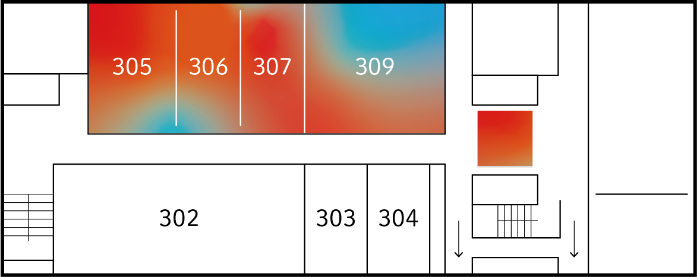
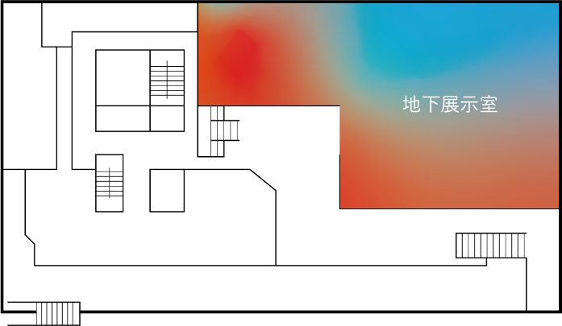
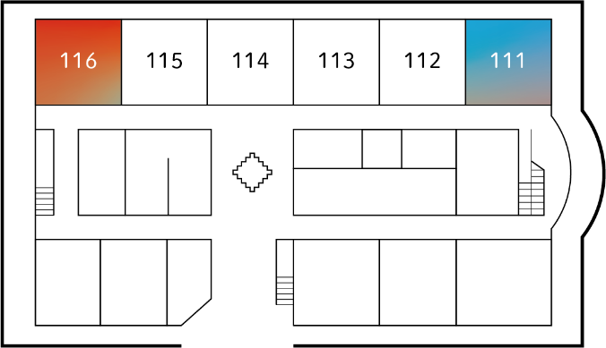

トップ
「ほどける」とは
作品一覧
フロアマップ
開催概要
アクセス
2024.1.12
(Fri.)
-1.15
(Mon.)
9:00-17:00
入場無料
©デザイン情報学科 卒業・修了制作展2024
TOP
CONCEPT
WORKS
MAP
ABOUT・ACCESS
キャンパスマップ
9号館

3F
305C
▶︎
田中瞳
立体花鳥朝夕昼夜図
305D
▶︎
高橋龍
Attracted to the Fluorescence Light
▶︎
神村竣哉
DEEP BLUE
306C
▶︎
加藤由希子
影
▶︎
奥寺新之介
「青龍蝦の視」展
▶︎
水野まい
かぷかぷわらったよ
307
▶︎
粕川愛巳里
星降る夜のエトランゼ
▶︎
チョヒウォン
firince
309
▶︎
守屋綾乃
影と光
▶︎
潮優羽
―言語の記号と想像力の関係について―
▶︎
シンウソップ
wefruitclub
▶︎
塚本真帆
―アルゴリズミックなアプローチによる伝統的な和菓子における外観拡張の試み―
▶︎
園田美宙
星骸
▶︎
永井美蘭
SENGGI OF MANCHU
▶︎
河村駿
視覚記憶の優先順位
▶︎
チョウカキ
IDOLLU
▶︎
八木田新菜
錯視のパラドックス
▶︎
チャンジェウォン
siori
3階エレベーターホール
▶︎
佐藤優樹
ゆがのみーちゃん
▶︎
瀧川太史
花結はひ
4F
402
▶︎
宇野花音
まだ知らない町並み旅
▶︎
武林悠
Permanent Symbols
403
▶︎
田村臣仁
アニメーション展示空間『カメラ目線』―映像空間の再現による視点変更の促進―
▶︎
田幸里菜
曖昧で鋭い
404
▶︎
猪俣里桜
Fragrantia
405
▶︎
藤本彩瀬
まだ見ぬあなたに触れる試み
409
▶︎
淡路唯
tuzu
▶︎
澤口千晶
童心をうたう
▶︎
増田南
フィンランド式幸福のすすめ
▶︎
野島花乃
mimamo
▶︎
キムガウル
「招待状」展
▶︎
鈴木利典
STAIRWAY
▶︎
郡司麻衣
離散性の中で生まれる連鎖
▶︎
塩田啓人
Relation
▶︎
吉田晴南
どんなきもち？こんなきもち
▶︎
近藤穂季
GTP工房☆フォーティーセブン
4階エレベーターホール
▶︎
荒木宥太
恋心のグラデーション
▶︎
大友優希
オバケレシピ
▶︎
古関萌
「神様、光をお返しします」
A415
▶︎
コウエキリン
Passport to PASSPORT
▶︎
黒野はるい
Pokke
▶︎
小野雪菜
変な生き物の世界
▶︎
柏木瑞希
無駄との隣り合わせ
▶︎
今井雄大
ミュージックデザイナー
▶︎
森本有理沙
かわいいで遊ぶ
▶︎
村松杏菜
雪国の色
▶︎
島澤流似
UIと質感について
ゼロスペース
▶︎
太田涼葉
ピタッと変身ぬい わ～るど
地下展示室
▶︎
髙着彩花
はなみせ
▶︎
リクイホウ
夢の鯉
▶︎
神山直也
世界意符/Sekai if
12号館

地下展示室
▶︎
山田太郎
出会うもの、別れゆくもの
▶︎
草場幹斗
死生欠損
▶︎
来嶋梓
Clear
▶︎
佐久間美有
上書き保存
▶︎
向井もも
交信
▶︎
金子遼大
供養
▶︎
佐藤凪咲
便器旅行
▶︎
九里まひろ
わたしのみつけかた
10号館

111
▶︎
キンエキドウ
Conversation・対話
▶︎
飯島康陽
生命の点描
▶︎
大森星楽
拡散
▶︎
中村季成
ラクゴ・エンカウント
116
▶︎
青木優実
いしき
▶︎
井上隆仁
もじにんげん
▶︎
濵村拓磨
YELLOW GROOVE
芝生
▶︎
東川陽路
嗜癖
2号館
トイレ
▶︎
べべ
大きな女性
14号館
地下展示室
▶︎
中川慎之介
Net Surfing
▶︎
長井葉菜子
てやんでいず MAGAZINE